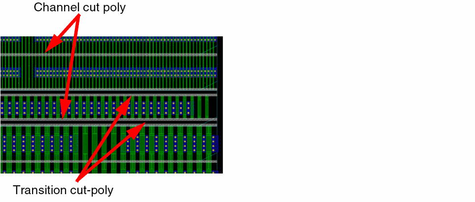

Types of Fill
Dummy fill can be classified into the following types:
-
Adjacent fill: Is a type of device fill inserted to the left side of devices, as shown in the snapshot below. These instances are created with all their parameters equal to those of the active devices. Adjacent fill is automatically snapped to the nearest compatible rows in a Spacing Patterns (SP) or Width Spacing Patterns (WSP)-correct manner.
Inserting adjacent fill helps achieve better active layer density.
-
Transition fill: Is a type of device fill inserted in empty rows to mitigate the effects that a type of device might have on other devices. The transition fill utility lets you insert devices between rows of devices. Transition fill cells are automatically snapped to the nearest compatible rows in an SP or WSP-correct manner. In certain advanced node processes, active devices are surrounded by an entire region of same-sized dummy fill to achieve proper matching. In cases where this is not practical, a transition region can be used to mitigate potential mismatch. In the snapshots below, the parameters of transition fill are the same as the neighboring devices, except that the finger length of the transition fill equals the median of the surrounding rows.
-
Poly fill: Extends polysilicon fingers vertically to the middle of the nearest cut-poly rail. This helps achieve better poly density, as specified by the foundry and mitigates density gradient effects (DGE).
The required poly density threshold is usually much higher than the amount of poly on the instances alone. Adding poly fill satisfies this requirement.
Poly fill inherently require cut poly rails to mitigate the shorts caused due to extending the polysilicon fingers. The following two types of cut-poly rails are required:- Channel Cut-Poly rails: Separate polysilicon fingers between rows to avoid gates from being shorted.
- Transition Cut-Poly rails: Are additional cut-poly rails that surround transition devices.
In the snapshots below, notice that a channel cut-poly is created between each row of devices. Also, extra transition cut-poly rails surround the transition rows.

Related Topics
Base Layer and Dummy Fill Insertion
Fill Definitions for the Virtuoso Placer Flow
Return to top